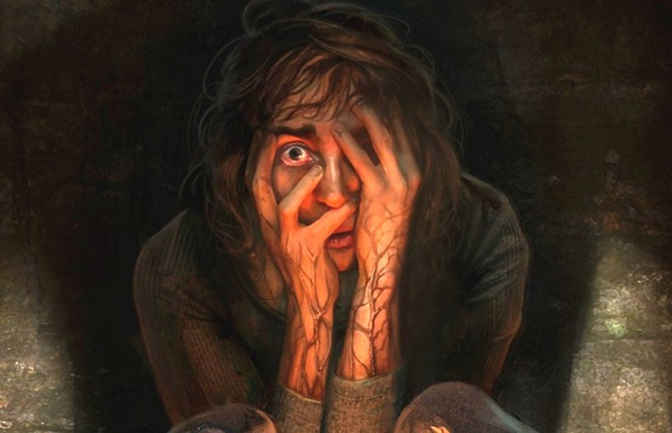

O terror intenso de Amnesia Rebirth
Amnesia: Rebirth, uma nova descida até à escuridão dos criadores da emblemática série Amnesia. Uma viagem lancinante através de desolação e desespero, explorando os limites da resistência humana.
Como The Dark Descent , o jogo é jogado a partir de uma perspectiva em primeira pessoa . O jogador assume o controle de Tasi Trianon, que deve vagar por cavernas no deserto e tumbas antigas para encontrar o paradeiro de seus companheiros. O jogo é pouco iluminado e os jogadores devem usar fontes de luz, como a própria lâmpada de combustível de Tasi, para ver claramente e encontrar maneiras de progredir. Os jogadores também podem vasculhar partidas, que podem ser usadas para acender tochas e velas montadas. Os jogadores também precisam resolver vários quebra-cabeças para progredir no jogo e ler as notas deixadas pelos personagens não jogáveis para saber mais sobre a história.
Como no primeiro jogo, o nível de medo de Tasi aumentaria gradualmente. O medo dominaria Tasi quando ela andasse completamente no escuro, fazendo com que ela alucinasse e ouvisse sussurros em sua cabeça. Imagens grotescas também aparecerão na tela. Resolver quebra-cabeças, se esconder de monstros e gerenciar fontes de luz podem controlar seu medo, evitando que isso aconteça. O jogo não possui nenhum sistema de combate e quando Tasi encontra uma criatura sobrenatural, ela pode correr ou se esconder. Ao contrário do primeiro jogo, quando o jogador é morto, o jogo não recarregaria um ponto de salvamento anterior . Em vez disso, isso levará o jogador um pouco à frente, permitindo que o jogador pule o encontro com o monstro inteiramente durante a segunda tentativa do jogador.
Enredo
O jogo se passa em março de 1937 e segue Anastasie "Tasi" Trianon, uma desenhista francesa em uma expedição na África colonial . Depois que seu avião cai na Argélia , ela acorda e descobre que seus companheiros estão desaparecidos, sem se lembrar do que aconteceu. Seguindo o rastro de sua expedição, Tasi percebe que está grávida e possui um Amuleto do Viajante, um dispositivo alienígena que lhe permite viajar para um mundo alienígena. Durante este tempo, ela encontra o cadáver de seu marido Salim, que morreu no acidente.
Tasi chega a um forte francês abandonado e descobre que uma força desconhecida massacrou sua guarnição. Ela contata um sobrevivente da expedição, Dr. Metzier, que a instrui a ir para uma vila próxima. Tasi viaja sob o forte e encontra carniçais mutantesque perseguem os túneis. Ela sai, mas é pega em um desmoronamento e cai em ruínas antigas que pertenciam a uma sociedade altamente avançada, mas agora extinta. Enquanto estuda as ruínas, Tasi descobre que a instalação foi construída por uma raça alienígena apelidada de Construtores de Portais, que podiam atravessar mundos e prolongar suas vidas graças à vitae, uma substância obtida pela tortura de humanos em grande escala. Uma trama fracassada para acabar com o sofrimento fez com que o Portão em seu planeta natal se destruísse, eliminando os Construtores de Portais e espalhando a Sombra, uma força perigosa que se manifesta em tumores vermelhos semelhantes a tumores. Tasi também encontra sinais de uma expedição anteriorliderada pelo professor Herbert. Para seu horror, Tasi descobre que um de seus membros da expedição, Leon, foi transformado em um ghoul. Mais tarde, ela resgata outro membro da expedição, Richard, mas o mata com raiva quando ele tenta deixá-la morrer.